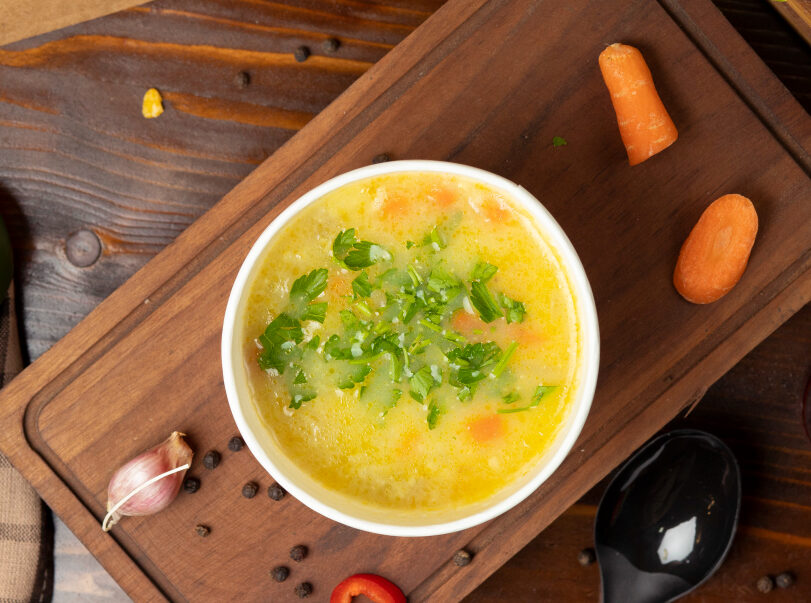
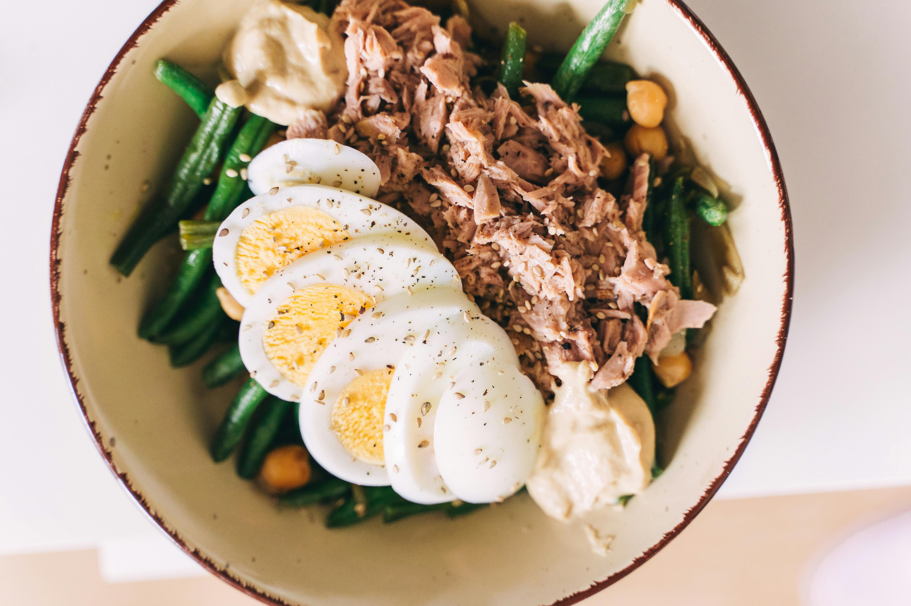
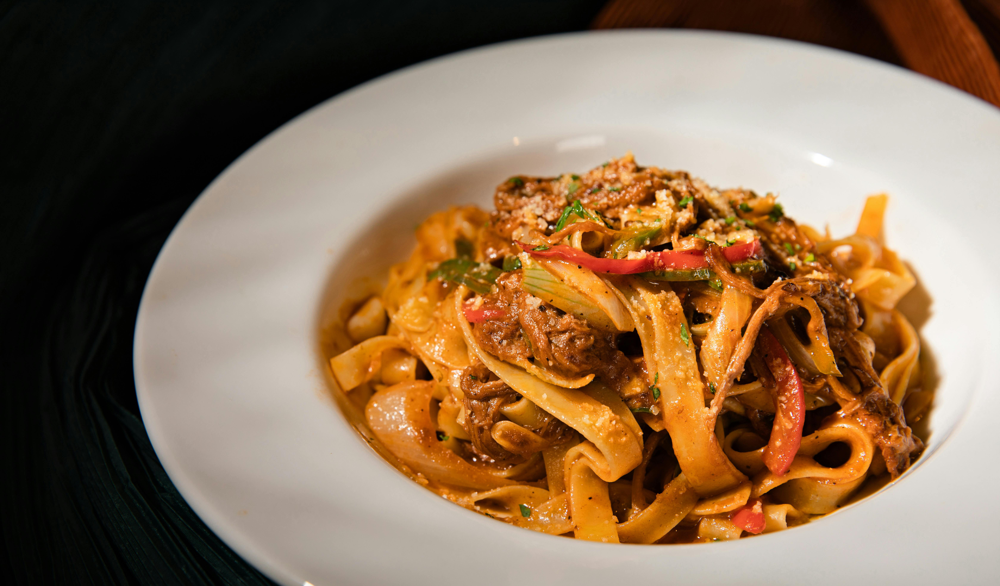
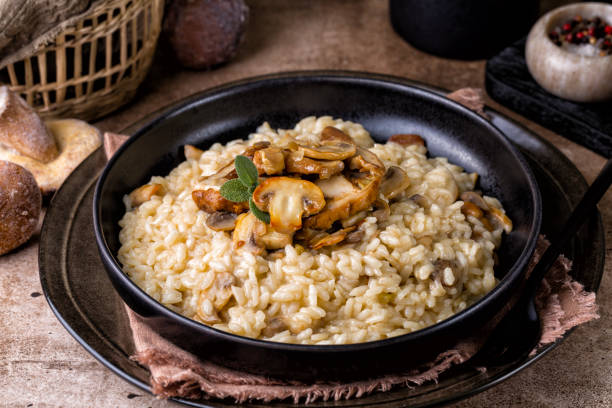

Смачні ідеї від шеф кухара Фільварка Максима

Суп овочевий
- Морква
- Картопля
- Цибуля
Час приготування: 30 хв

Салат з тунцем
- Тунець
- Огірок
- Кукурудза
Час приготування: 15 хв

Паста з соусом
- Макарони
- Помідори
- Базилік
Час приготування: 25 хв

Різото
- Гриби
- Броколі
- Морква
Час приготування: 20 хв